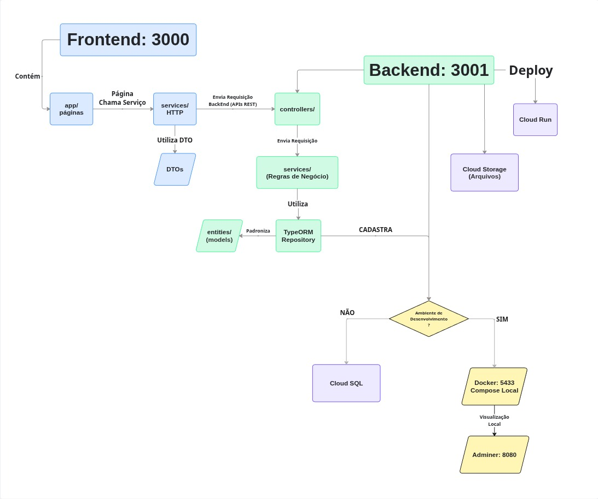

Arquitetura do Projeto
Visão Geral
O projeto é organizado como um monorepo: um único repositório Git contendo o frontend e o backend em pastas separadas. Essa escolha simplifica o desenvolvimento para times pequenos, não é necessário sincronizar dois repositórios diferentes para uma única mudança.
AILAB_Makers---Grupo-2/
├── backend/ -> API (NestJS)
├── frontend/ -> Interface web (Next.js)
├── docker-compose.yml -> Banco de Dados
├── LICENSE
└── README.md
Arquitetura do Projeto
Separação de responsabilidades
O sistema é dividido em três camadas independentes que se comunicam de forma bidirecional. O diagrama abaixo mostra o fluxo completo de uma requisição, desde a interface do usuário até a persistência no banco de dados, incluindo a ramificação entre ambiente de desenvolvimento (Docker local) e produção (Google Cloud).

Figura 1 — Fluxo de dados e infraestrutura do projeto.
Como ler o diagrama:
| Cor | Camada | Responsabilidade |
|---|---|---|
| 🔵 Azul | Frontend | Interface, chamadas HTTP, tipagem (DTO) |
| 🟢 Verde | Backend | Controllers, regras de negócio, ORM |
| 🟣 Roxo | Produção | Google Cloud (Cloud Run + Cloud SQL) |
| 🟡 Amarelo | Dev local | Docker Compose + Adminer |
Fluxo principal:
app/páginaschamaservices/HTTPservices/HTTPenvia REST -->controllers/do backendcontrollers/delega paraservices/(cuida das regras de negócio)services/usaTypeORM Repositorypadronizado porentities/- Repository persiste no Banco de Dados
Ambiente de Desenvolvimento?
- SIM: Docker Compose local --> Adminer (
localhost:8080) para visualização rápida - NÃO: Google Cloud SQL (produção) Deploy: Backend hospedado no Cloud Run (Google Cloud).
Observações:
- DTOs: Data Tranfer Object. Evita colocar múltiplos campos para envio de requisições em um service. Por exemplo: Ao invés de passar "nome, e-mail, senha", simplificamos e passamos apenas o "Usuário" que é um objeto que contém esses atributos.
- Entities (Models): Também conhecido como 'models', são as entidades da aplicação (Usuários, Logs, Arquivos) estruturadas com os campos necessários (id, nome, ...) para serem enviados para o banco de dados, garante consistência nas operações e evita o envio de múltiplos campos nas requisições para o Banco de Dados.
Fluxo Funcional do Frontend
Estrutura de camadas
O frontend é organizado em três camadas com responsabilidades distintas:
src/
├── app/ ← Páginas (rotas da aplicação)
│ └── register/
│ ├── register.module.css ← Estilização
│ └── page.tsx ← Renderização + estado visual
├── services/ ← Comunicação com a API
│ └── users.service.ts ← Chamadas HTTP ao backend
└── dto/ ← Data Tranfer Object
└── users.dto.ts ← Formatos de request e response
Regra fundamental: cada camada conhece apenas a camada abaixo dela.
- A página chama o service. A página não faz
fetchdiretamente. - O service chama a API. O service não gerencia estado visual.
- O DTO define os tipos. O DTO não tem lógica.
Fluxo de um cadastro
1. Usuário preenche o formulário e clica em "Cadastrar"
↓
2. page.tsx chama registerUser(form)
↓
3. users.service.ts monta e envia o POST /api/users/register
↓
4. Backend processa e retorna { id, email, name }
↓
5. page.tsx atualiza o estado visual (success ou error)
↓
6. Usuário vê o feedback na tela
Por que usar um service separado?
Sem o service, o fetch ficaria diretamente na página. O problema: se 3 páginas diferentes precisarem cadastrar um usuário, o código de chamada HTTP se repete 3 vezes. Com o service, a lógica de comunicação existe em um único lugar, se a URL da API mudar, você altera apenas users.service.ts.
Backend
Estrutura de módulos
O NestJS organiza o código em módulos. Cada funcionalidade do sistema (usuários, arquivos, autenticação) vive em seu próprio módulo com controller, service e eventualmente entidades próprias.
src/
├── entities/
│ └── user.entity.ts ← Mapeamento da tabela no banco
├── users/
│ ├── dto/ ← Segue Mesmo DTO do FrontEnd
│ │ └── create-user.dto.ts ← Validação dos dados de entrada
│ ├── users.controller.ts ← Recebe e responde requisições HTTP
│ ├── users.service.ts ← Regras de negócio
│ └── users.module.ts ← Registra o módulo no NestJS
├── app.module.ts ← Módulo raiz - conecta tudo
└── main.ts ← Ponto de entrada da aplicação
Fluxo de uma requisição no backend
POST /api/users/register
↓
ValidationPipe ← Valida o body antes de chegar no controller
↓ (rejeita automaticamente se faltar campo ou formato errado)
UsersController ← Recebe a requisição, chama o service
↓
UsersService ← Verifica se email existe, faz hash da senha, salva
↓
Repository (Banco de Dados) ← Executa o SQL no banco
↓
Resposta JSON ← Retorna { id, email, name } --> senha nunca retorna
Regras de segurança aplicadas
- Senhas: nunca armazenadas em texto puro --> sempre com hash
bcrypt. - Resposta: o campo
passwordHashnunca é retornado nas respostas da API - Validação: o
ValidationPipecomwhitelist: trueremove automaticamente qualquer campo extra que o cliente envie - Variáveis sensíveis: credenciais ficam no
.env, que está no.gitignore
Banco de Dados
Entidade User
Tabela: users
┌──────────────┬──────────────────────┬───────────────────────────────┐
│ Coluna │ Tipo │ Descrição │
├──────────────┼──────────────────────┼───────────────────────────────┤
│ id │ UUID (PK) │ Identificador único │
│ email │ VARCHAR (UNIQUE) │ E-mail do usuário │
│ passwordHash │ VARCHAR │ Senha com bcrypt │
│ name │ VARCHAR │ Nome do usuário │
│ createdAt │ TIMESTAMP │ Data de criação (automático) │
└──────────────┴──────────────────────┴───────────────────────────────┘
Desenvolvimento: Docker
Em desenvolvimento, o banco de dados roda em um container Docker gerenciado pelo docker-compose.yml. Isso significa que qualquer membro do time pode rodar o projeto no notebook sem precisar instalar o PostgreSQL manualmente ou ter acesso ao Google Cloud.
# docker-compose.yml
postgres:
image: postgres:16-alpine
ports:
- '5433:5432' ← host:container
O TypeORM (Bilioteca para Banco de Dados) com synchronize: true cria e atualiza as tabelas automaticamente a cada vez que o backend inicia. Isso elimina a necessidade de rodar scripts SQL manualmente durante o desenvolvimento.
Atenção:
synchronize: trueestá desabilitado em produção (NODE_ENV=production). Em produção, mudanças no banco são feitas via migrations, isso protege os dados de alterações acidentais.
Produção: Google Cloud SQL
Em produção (Cloud Run), o banco é uma instância gerenciada de PostgreSQL no Google Cloud SQL. A conexão não usa host:port como em desenvolvimento, o Google injeta automaticamente um Unix socket no container do Cloud Run.
Desenvolvimento: localhost:5433 → container Docker
Produção: /cloudsql/PROJECT:REGION:INSTANCE → Cloud SQL
O código detecta o ambiente pela variável INSTANCE_CONNECTION_NAME:
// Se INSTANCE_CONNECTION_NAME estiver preenchida → Cloud SQL (socket)
// Se estiver vazia → PostgreSQL local (TCP)
const instanceName = config.get('INSTANCE_CONNECTION_NAME');
...(instanceName
? { host: `/cloudsql/${instanceName}` }
: { host: 'localhost', port: 5433 })
Isso garante que o mesmo código funciona em desenvolvimento e produção, apenas com variáveis de ambiente diferentes.
Adminer: Visualizador do banco em desenvolvimento
Para inspecionar o banco durante o desenvolvimento sem instalar ferramentas externas, o docker-compose.yml inclui o Adminer, uma interface web de gerenciamento de banco de dados.
Após docker compose up -d, acesse http://localhost:8080 com:
- Sistema: PostgreSQL
- Servidor:
postgres - Usuário:
postgres - Senha:
postgres - Base de dados:
healthtech
Referências
- Documentação NestJS — Modules
- Documentação NestJS — Controllers
- Documentação NestJS — Providers/Services
- Documentação NestJS — Validation (ValidationPipe)
- Documentação TypeORM — Entities
- Documentação TypeORM — Data Source (synchronize)
- Documentação Next.js — App Router
- Google Cloud SQL — Connecting from Cloud Run
- Google Cloud Run — Overview
- bcrypt — npm
- Adminer — Documentação oficial